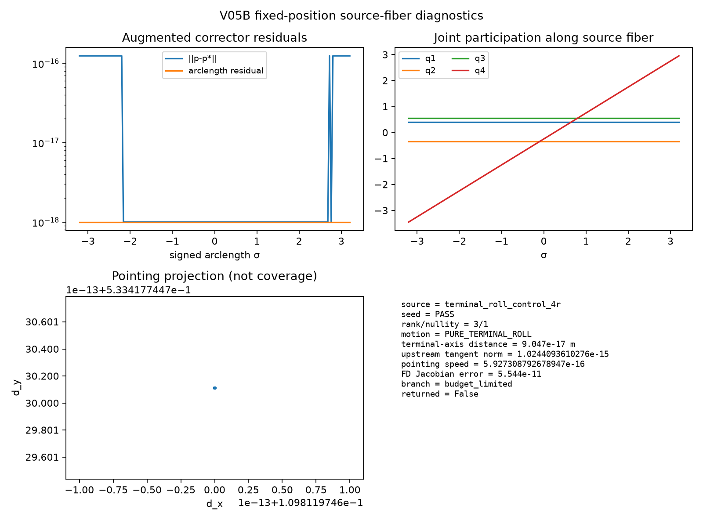
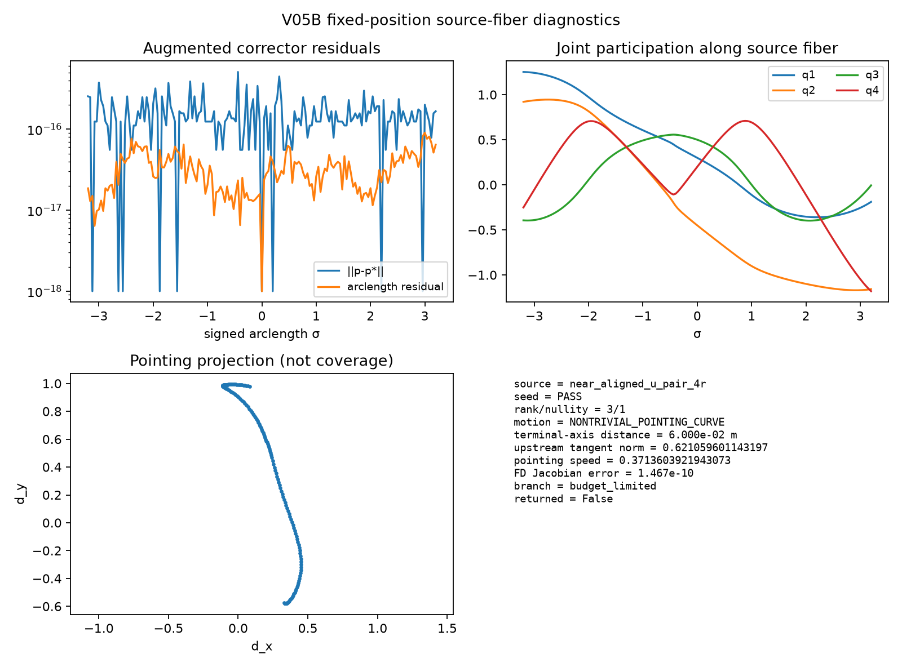

terminal_roll_control_4r. Continuation solves the augmented pseudo-arclength system for the exact fixed-position closure 4R + S_v.| Source | Seed | rank/nullity | Motion signature | Tool-axis distance [m] | Branch | Returned | Samples |
|---|---|---|---|---|---|---|---|
generic_4r | PASS | 3/1 | NONTRIVIAL_POINTING_CURVE | 6.000e-02 | budget_limited | False | 161 |
terminal_roll_control_4r | PASS | 3/1 | PURE_TERMINAL_ROLL | 9.047e-17 | budget_limited | False | 161 |
exact_u_pair_4r | PASS | 3/1 | NONTRIVIAL_POINTING_CURVE | 6.000e-02 | budget_limited | False | 161 |
near_aligned_u_pair_4r | PASS | 3/1 | NONTRIVIAL_POINTING_CURVE | 6.000e-02 | budget_limited | False | 161 |
singular_4r_parallel | FAIL | 1/3 | SINGULAR_OR_EMPTY | 6.000e-02 | rejected_seed | False | 0 |




This readout establishes source-fiber and orientation-curve inputs. It does not certify an independent reduced closed mechanism.